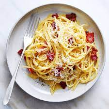

Carbonara

Pasta dish that uses eggs, bacon, and cheese
- 1/2 pound of bacon, cut into small pieces
- 4 large eggs
- 1/4 cup heavy cream
- 1 cup grated parmesan cheese
- 16 ounces dry fettuccine pasta
- 1/4 cup butter
- 1/4 cup chopped parsley
- ground black pepper
- Cook and stir bacon in a large skillet over medium-high heat until evenly browned and crisp, about 10 minutes. Drain on a paper towel-lined plate and set aside.
- Beat together eggs and cream in a medium bowl until just blended. Stir in Parmesan cheese and set aside.
- Fill a large pot with lightly salted water and bring to a rolling boil. Cook pasta in boiling water until tender yet firm to the bite, about 8 minutes. Drain and return pasta to the pot.
- Add softened butter to the pot and toss with pasta until butter is melted. Add bacon and egg-cheese mixture. Stir until the heat of pasta cooks eggs, then garnish with parsley and black pepper to serve.